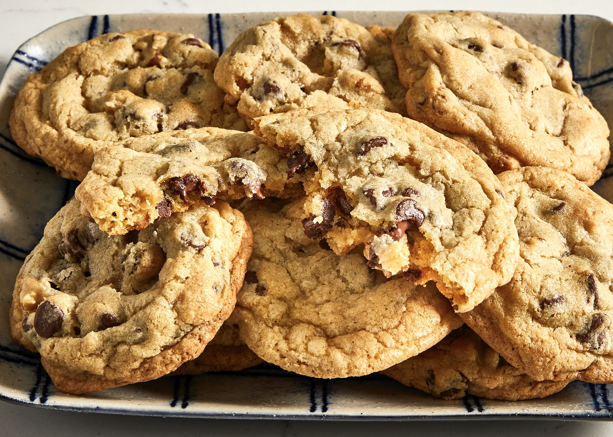

Chocolate Chips Cookie Recipe
Easy & Simple Recipe For You To Try At Home
Category: Dessert | Cuisine: American | Prep Time: 10 minutes | Cook Time: 8 minutes | Total Time: 18 minutes | Servings: 24 cookies | Calories: 138kcal

Ingredients
1/4 cup brown sugar packed
2 teaspoons vanilla extract
1 3/4 cups all-purpose flour
1 cup semisweet chocolate chips
Instructions
1) Preheat the oven to 350 F.
2) Microwave the butter for about 40 seconds. Butter should be completely melted but shouldn't be hot.
3) In a large bowl, mix butter with the sugars until well-combined.
4) Stir in vanilla and egg until incorporated.
5) Add the flour, baking soda, and salt. Please read the recipe note about properly measuring flour.
6) Mix dough until just combined. Dough should be soft and a little sticky but not overly sticky.
7) Stir in chocolate chips.
8) Scoop out 1.5 tablespoons of dough (medium cookie scoop) and place 2 inches apart on baking sheet.
9) Bake for 7-10 minutes, or until cookies are set. They will be puffy and still look a little underbaked in the middle.
Notes
1) Be sure to fluff and then scoop and sweep to measure the flour. Too much flour will result in a dry or crumbly cookie.
2) Or ¼ teaspoon table salt.
3) Don't over-bake the cookies, or you won't end up with soft cookies. Several people have said that they've needed to bake the cookies for longer. Since oven temps can vary, I suggest starting with the listed baking time and increasing the time as needed.
Nutrition
SERVING: 1 cookie | CALORIES: 138kcal | CARBOHYDRATES: 17g | PROTEIN: 1g | FAT: 6g | SATURATED FAT: 4g | CHOLESTEROL: 17mg | SODIUM: 109mg | POTASSIUM: 57mg | SUGAR: 9g | VITAMIN A: 130IU | CALCIUM: 10mg | IRON: 1mg